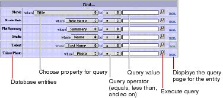
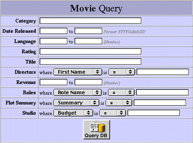

Table of Contents
Table of Contents  Next Section
Table of Contents
Next Section
Table of Contents  Previous Section
Previous Section

The query-all page enables you to construct a query on an attribute of a particular entity (queries on relationships are not allowed). To use this page, select a property from an entity's pop-up menu, specify the comparison operator, type the string to search on. and click the magnifying-glass button.
The query page, on the other hand, is tied to a particular entity but allows you to construct queries on relationships as well as attributes. The following example illustrates a query page:

The first column in the table lists the current entity's properties. The second column contains pop-up menus and text fields that let you enter values to construct queries on single and multiple properties.
A property is either an attribute (a value stored directly in this entity's table) or a relationship (an association between this entity and another entity). For example, in the figure above, Title is an attribute and Studio is a relationship. You can use the WebAssistant to hide properties that you don't want users to see.
Note: Direct to Web only displays properties that are class properties. In addition, primary keys and attributes marked as the source of a relationship are hidden by default.
Properties are represented in various ways. For example, in the figure, you enter a single string value for Title, while you enter a range of values for Date Released. You can change the representation of most properties using the WebAssistant. In particular, you may want to change how relationships are shown, since by default, you query them by specifying an ID, which is something the user is unlikely to know. See "Changing How Properties Are Displayed" for more information on the different ways of representing properties in your application's pages.
You can use initial characters and special characters in query fields for string searches. For example, you could enter "sh" in the Movie entity's Title to search for all movies that begin with those characters. You can also use the asterisk character to indicate "all occurences." For instance, "*love" would return all movies that contain the substring "love".
The results are displayed in a list page; see "List Pages and Select Components".
Table of Contents Next Section